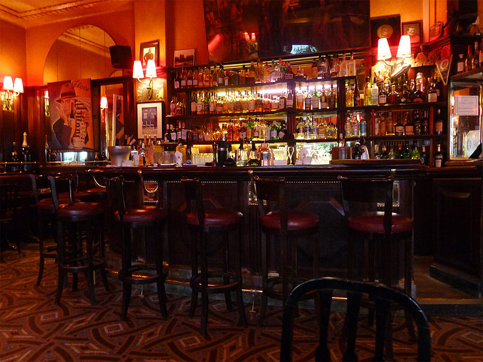
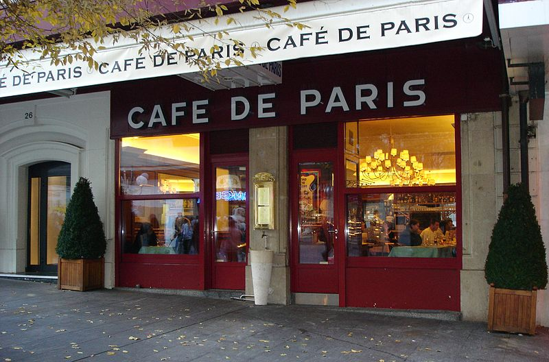

Restaurants
Paris has a great choice of restaurants. Each region has it's own speciality. Rue Mouffetard is a traditional Parisian restaurant with a wonderful garden at the back.

Paris is the capital and the most populous city of France with lots of unique and interesting places to visit
Whether working-class, trendy or chic, Parisian bars are the ideal spot to meet in the evening to have fun. Closerie des Lilas is Diane's favorite bar. With a classic and friendly atmosphere, it's a great place to spend time with your friends.
Paris has a great choice of restaurants. Each region has it's own speciality. Rue Mouffetard is a traditional Parisian restaurant with a wonderful garden at the back.
There is an unlimited choice of cute little cafes in Paris. A well-known cafe which represents the culture of Paris is Cafe de Paris.
Paris is a great place to stay, offering many interesting things to cater to everyone's needs!